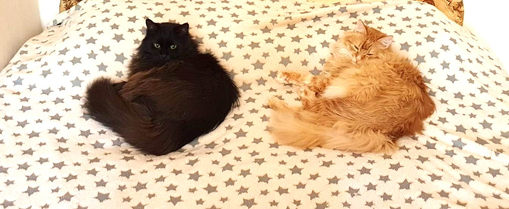

Это сайт о двух котах, которые живут в семье Савкиных. Один кот рыжий, другой кот - черный. Рыжего кота зовут Чубик, а черного - Пепси.Котики живут очень дружно и всегда готовы пойти друг другу на помощь. А еще они всегда доставляют замурчательное настроение своим хозяевам. А недавно, сладкие котики проделали путешествие из Москвы в Санкт-Петербург, куда они переехали в большую квартиру, где теперь намного удобнее котикам играть в догонялки и забегалки.
Пепси
- День рождения: 11 сентября 2010 г.
- Характеристика: очень темно-коричневый с белым брюшком, красивые зеленые глаза
- Повадки: не любит, когда трогают за попу, очень ласковый и добрый, очень-очень любит кушать, приxем все подряд, мурчит супер-громко, обожает спать в ванной
- Любимые игры: гоняться за лазером
Чубик
- День рождения: 29 апреля 2014 г.
- Характеристика: рыжий с белым брюшком, красивые рыжие глаза
- Повадки: властелин подоконников и всего в доме, все делает только тогда, когда хочет, очень разговорчивый, любит позировать и красоваться
- Любимые игры: дразнить Пепси